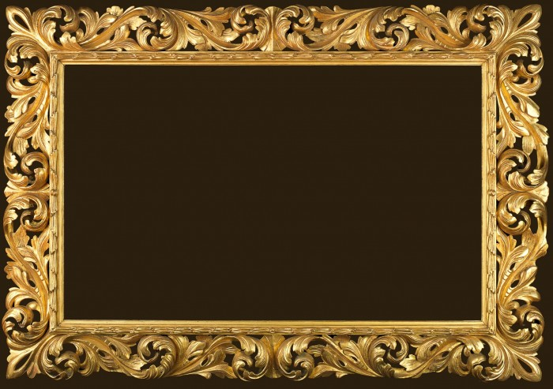
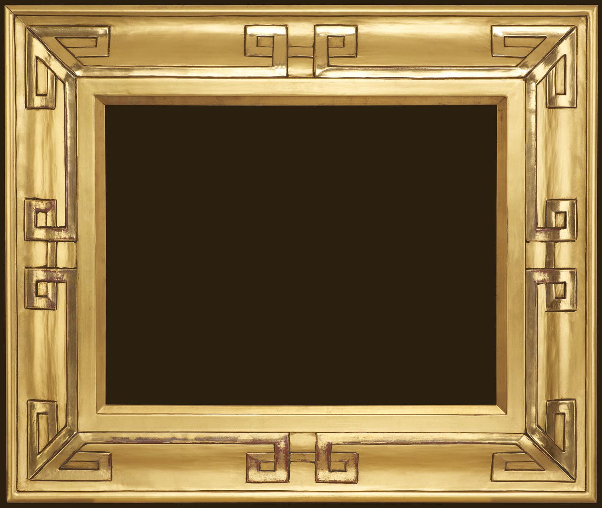
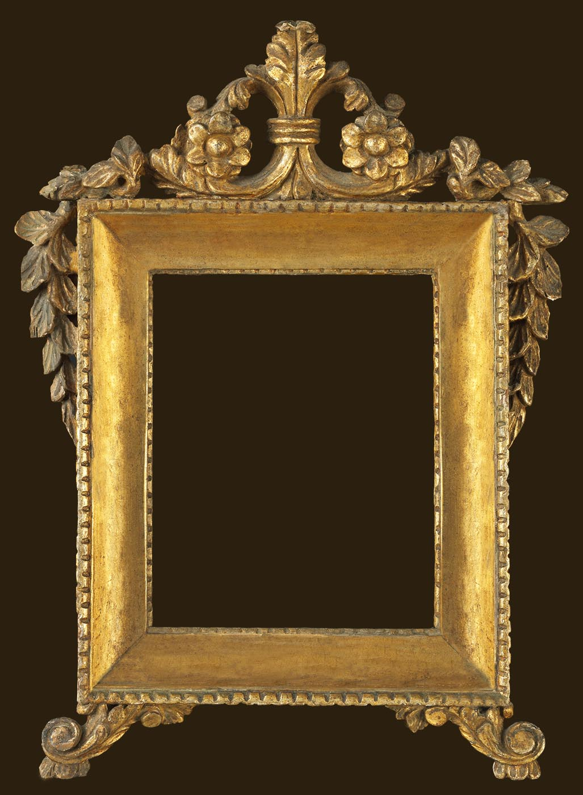
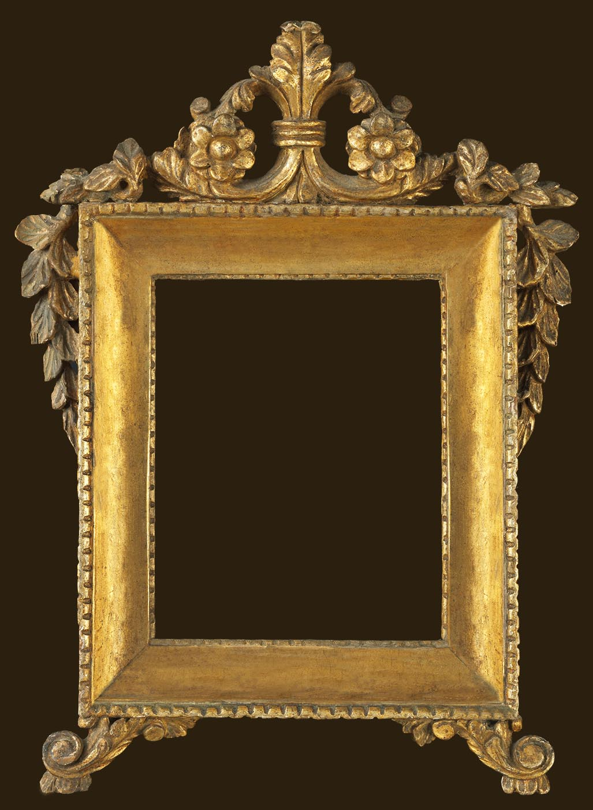
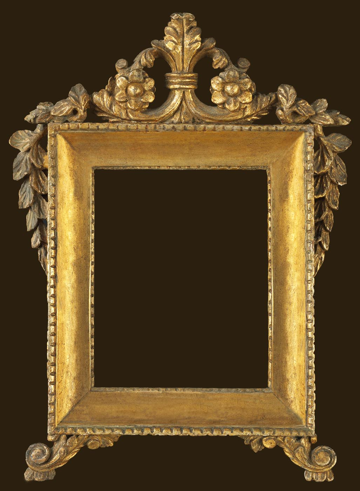

To, čo som si na začiatku myslel, že bude najmenší problém, sa neskôr ukázalo ako veľmi obtiažne. Kupit vhodný a pekný rám bolo takmer nemožne. Hodiny a hodiny som strávil hľadaním rámov. Tie, ktoré sa mi páčili boli predávané aj s obrazom, iné zase nemali vhodný rozmer, boli poškodené alebo veľmi drahé. Tu je ponuka rámov pre tých, ktori sú ochotni zaplatiť aj viac, ako je štandard. Tieto rámy sú z obdobia cca 18-19 storočia. Rozmery rámov sú cca 100 x 50 cm. Rámy sú na absolútne svetovej úrovni. Samozrejme tomu zodpovedá aj cena.



 

